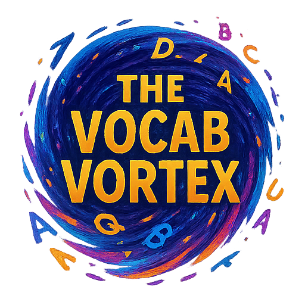
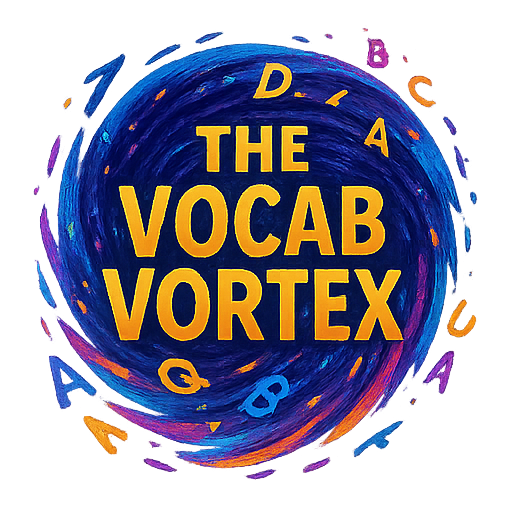

aberrant: Departing from an accepted standard. The aberrant behavior of the student concerned his parents
aberrations: A departure from what is normal, usual, or expected, typically an unwelcome one. The anomalies in the data were considered statistical aberrations
abrogate: To repeal or do away with (a law, right, or formal agreement). The government sought to abrogate the outdated treaty
amenable: Open and responsive to suggestion; easily persuaded or controlled. The team was amenable to new ideas and suggestions
amplify: To increase the volume or intensity of; to make more strong, clear, or complete. The microphone amplified her voice
anachronistic: Belonging to a period other than that being portrayed; out of date. The sword in the modern action movie was anachronistic
animadversions: Criticism or censure. His controversial statements drew sharp animadversions from the media
animus: Hostility or ill feeling. He felt a strong animus toward his former business partner
anomalies: Something that deviates from what is standard, normal, or expected. Scientists were puzzled by the anomalies in the experimental results
anomie: Lack of the usual or ethical standards in an individual or group. Rapid social change can sometimes lead to a sense of anomie in society
apathetic: Showing or feeling no interest, enthusiasm, or concern. The apathetic audience barely reacted to the performance
apathy: Lack of interest, enthusiasm, or concern. The general apathy of the public towards politics was concerning
archaic: Very old or old-fashioned. The use of “thee” and “thou” is now considered archaic
arduous: Involving or requiring strenuous effort; difficult and tiring. Climbing the mountain was an arduous task
atrophy: Decrease in size or wasting away of a body part or tissue; a gradual decline in effectiveness due to underuse or neglect. Years of disuse caused the muscles to atrophy
astute: Having or showing an ability to accurately assess situations or people and turn this to one’s advantage. An astute businessman, he always made shrewd investments
atavistic: Relating to or characterized by atavism; reversion to an earlier type; primitive. He felt an atavistic urge to hunt and gather
authentic: Of undisputed origin; genuine. The museum displayed an authentic ancient artifact
axiomatic: Self-evident or unquestionable. It is axiomatic that a good education opens doors to opportunity
axioms: Statements or propositions which are regarded as being established, accepted, or self-evidently true. The geometric proofs relied on a set of fundamental axioms
banal: So lacking in originality as to be obvious and boring. Banal pop songs
barrage: A concentrated artillery bombardment over a wide area; a rapid, continuous bombardment of something. She faced a barrage of questions
benign: Gentle and kind; not harmful in effect. A benign tumor
bolster: To support or strengthen; to prop up. The new evidence helped to bolster the prosecution’s case
bond: A thing used to tie something or to fasten things together; a strong connection. The bond of friendship
brink: A point at which something is about to happen; the verge. On the brink of war
brevity: Concise and exact use of words in writing or speech; shortness of time. The brevity of the presentation was appreciated by the audience
capitulations: The act of surrendering or ceasing to resist an opponent or demand. The treaty included several capitulations on disputed territories
capricious: Given to sudden and unaccountable changes of mood or behavior; unpredictable. A capricious leader is unpredictable
caricature: A ludicrous or grotesque representation of a person or thing by exaggerating striking characteristics. The political cartoon was a clever caricature of the prime minister
camaraderie: Mutual trust and friendship among people who spend a lot of time together. There was great camaraderie among the team members
circumscribed: Restricted or limited. Their power was severely circumscribed by the new laws
circumvent: To find a way around an obstacle; to overcome a difficulty, typically in a clever and surreptitious way. They tried to circumvent the regulations by exploiting loopholes
clandestine: Kept secret or done secretively, especially because illicit. The clandestine meeting took place under the cover of darkness
cohesion: The act or state of sticking together tightly; the tendency to unite. The team’s cohesion was evident in their synchronized movements
collateral: Something pledged as security for repayment of a loan; additional but subordinate; parallel. The bank required collateral for the large loan
complacency: A feeling of uncritical satisfaction with oneself or one’s achievements. The team’s complacency after early success led to their downfall
conciliatory: Intended or likely to placate or pacify. He adopted a conciliatory tone to ease the tension in the room
consolidate: To make (something) physically stronger or more solid; to combine (a number of things) into a single more effective or coherent whole. The company decided to consolidate its smaller offices into one large headquarters
contentious: Causing or likely to cause an argument; controversial; involving heated argument. The issue of climate change remains highly contentious
contingent: Subject to change; dependent on. The success of the project is contingent upon securing sufficient funding
cosmopolitanism: The ideology that all human ethnic groups belong to a single community based on a shared morality. His belief in cosmopolitanism led him to advocate for global cooperation
crystalline: Having the structure and transparency of a crystal; sparklingly clear. The lake’s crystalline waters reflected the sky
cursory: Hasty and therefore not thorough or detailed. A cursory glance at the document was not enough to understand its complexities
despondency: A state of low spirits caused by loss of hope or courage. He felt a deep sense of despondency after failing the exam
desultory: Lacking a plan, purpose, or enthusiasm; going from one subject to another in a halfhearted way. He made a desultory attempt to clean his room
dialectical: Relating to the philosophical concept of dialectic, involving discussion and reasoning to find a truth. The debate was a dialectical exchange of opposing viewpoints
discord: Lack of agreement or harmony between people or things. The constant discord among family members caused much tension
draconian: Excessively harsh and severe (of laws or punishments). The new draconian laws were met with widespread protest
dualistic: Relating to or characterized by dualism; involving two opposing parts or aspects. The philosophy presented a dualistic view of mind and body
eclipse: A major reduction or loss of power, prominence, or success; to overshadow. The success of the new product threatened to eclipse its predecessors
effervescent: Bubbly, fizzy; vivacious and enthusiastic. Her effervescent personality lit up the room
efficacious: Effective; producing the desired effect. The medicine proved to be highly efficacious in treating the illness
eliding: Omitting (a sound or syllable) when speaking; passing over or omitting (something). The speaker was careful to avoid eliding words when giving the presentation
elucidate: To make (something) clear; to explain. The speaker used examples to elucidate her complex theory
enduring: Lasting over a long period; permanent. The enduring legacy of the philosopher continues to influence thought
equilibrium: A state in which opposing forces or influences are balanced. The market reached a state of equilibrium between supply and demand
equitable: Fair and impartial. The company aimed to create an equitable distribution of profits
erratic: Not regular or consistent in movement, behavior, or quality. The car’s erratic movements made the driver nervous
exigent: Pressing; demanding. The exigent circumstances required immediate attention
exigencies: Urgent need or demand. The exigencies of the crisis required immediate action
exorbitant: Unreasonably high (of a price or amount charged). The hotel charged an exorbitant price for a small room
exponential: (Of an increase) becoming more and more rapid. The company experienced exponential growth in sales
extirpate: Root out and destroy completely. The disease was extirpated from the region
extraneous: Irrelevant or unrelated to the subject being dealt with. Remove any extraneous details from your report
facetious: Treating serious issues with deliberately inappropriate humor; flippant. His facetious remarks during the crisis were unhelpful
fallacies: Mistaken beliefs, especially ones based on unsound argument. The argument was full of logical fallacies
facilitate: To make (an action or process) easy or easier. Good communication facilitates understanding
facilitates: Makes an action or process easy or easier. Technology greatly facilitates communication across distances
fatuity: Foolishness; stupidity. The fatuity of his argument was evident
flippant: Not showing a serious or respectful attitude. His flippant response to the serious question was inappropriate
flummox: To bewilder or perplex (someone). The complicated instructions flummoxed the new employee
frenetic: Fast and energetic in a rather wild and uncontrolled way. The frenetic pace of city life can be overwhelming
fundamental: Forming a necessary base or core; of central importance. Respect for human rights is a fundamental principle of democracy
gestational: Relating to or denoting the process of carrying or being carried in the womb between conception and birth. Gestational diabetes requires careful monitoring during pregnancy
harmonious: Forming a pleasing or consistent whole; free from disagreement or dissent. The colors in the painting were harmonious and balanced
heuristic: Enabling a person to discover or learn something for themselves. The teacher used a heuristic approach to problem-solving, encouraging students to explore solutions
hegemony: Leadership or dominance, especially by one state or social group over others. The company sought to establish its hegemony in the market
homages: Special honors or respect shown publicly. Artists paid homages to their mentors through their work
hybridization: The process of combining two different species or varieties to create a hybrid; the combining of two distinct elements to produce a new one. The hybridization of various musical genres created a unique sound
ignoble: Not honorable in character or purpose. He was accused of ignoble motives behind his seemingly charitable actions
ignominious: Deserving or causing public disgrace or shame. The team suffered an ignominious defeat in the final match
immutable: Unchanging over time or unable to be changed. The laws of physics are considered immutable
impediments: Hindrances or obstructions in doing something. Lack of funding and political will were major impediments to the project
implacable: Unable to be placated; relentless, unstoppable. The implacable enemy continued their relentless pursuit
inauspicious: Not conducive to success; unpromising. The project got off to an inauspicious start with several early setbacks
inchoate: Just begun and therefore not fully formed or developed; rudimentary. The artist’s inchoate ideas slowly developed into a masterpiece
incalculable: Too great to be calculated or estimated. The storm caused incalculable damage to the coastline
incendiary: Designed to cause fires; tending to stir up conflict. The politician’s incendiary remarks further inflamed the crowd
incontrovertible: Not able to be denied or disputed. The forensic evidence was incontrovertible proof of his guilt
inconsequential: Not important or significant. The details were inconsequential to the overall plan
indolence: Avoidance of activity or exertion; laziness. His indolence led to a decline in his academic performance
inimical: Tending to obstruct or harm; unfriendly, hostile. Excessive bureaucracy is inimical to efficient progress
inordinate: Unusually or disproportionately large; excessive. She spent an inordinate amount of time on social media
intractable: Hard to control or deal with; difficult or stubborn. The intractable problem seemed to have no easy solution
insipid: Lacking flavor, vigor, or interest. The conversation was so insipid that I almost fell asleep
insouciant: Showing a casual lack of concern; indifferent. He maintained an insouciant attitude despite the looming deadline
insuperable: Impossible to overcome. The team faced insuperable obstacles in their quest for victory
insurmountable: Too great to be overcome. The financial challenges seemed insurmountable at first
instrumental: Serving as a crucial means, agent, or tool. His advice was instrumental in her decision
interminable: Endless or apparently endless (often used hyperbolically). The meeting seemed interminable
irrepressible: Not able to be controlled or restrained. Her irrepressible enthusiasm for life was infectious
irrevocable: Not able to be changed, reversed, or recovered; final. His decision to move abroad was irrevocable
jejune: Naïve, simplistic, and superficial; dry and uninteresting. Her jejune remarks revealed her lack of understanding
languid: Displaying a disinclination for physical exertion or effort; slow and relaxed. The languid afternoon was perfect for napping
languish: To lose or lack vitality; grow weak or feeble. The old factory continued to languish in disrepair
lethargic: Affected by lethargy; sluggish and apathetic. The hot weather made him feel lethargic and unwilling to move
lucidity: Clarity of expression; intelligibility; clearness of thought. The old man had moments of remarkable lucidity despite his illness
magnanimity: The fact or condition of being magnanimous; generosity. His magnanimity in victory earned him respect from his opponents
meager: (Of something provided or available) lacking in quantity or quality. He survived on a meager diet of bread and water
metrics: A system or standard of measurement; a set of measures. The company used various metrics to track its performance
modulations: The action or process of varying in strength, tone, or pitch. The speaker’s voice had subtle modulations that conveyed emotion
morality: Principles concerning the distinction between right and wrong or good and bad behavior. The film explored complex questions of morality
nascent: (Especially of a process or organization) just coming into existence and beginning to display signs of future potential. The nascent technology showed great promise for the future
nebulous: In the form of a cloud or haze; hazy; unclear, vague, or ill-defined. The concept remained nebulous until he explained it with an example
neutrality: The state of not supporting or helping either side in a conflict. The country maintained a policy of strict neutrality during the war
nominal: In name only; existing as a small amount. He was the nominal leader, but someone else held the real power
nullify: To make legally null and void; invalidate; to make of no use or value; cancel out. The court decided to nullify the contract
obduracy: The quality or state of being obdurate; stubbornness. His obduracy made negotiation impossible
obfuscate: To make obscure, unclear, or unintelligible. Some politicians obfuscate the truth to mislead the public
obstinate: Stubbornly refusing to change one’s opinion or chosen course of action, despite attempts to persuade one to do so. He was obstinate in his refusal to apologize
onerous: (Of a task or responsibility) involving an amount of effort and difficulty that is oppressively burdensome. The onerous task of cleaning the entire house
ostentatious: Characterized by vulgar or pretentious display; designed to impress or attract notice. An ostentatious display of wealth
ostensible: Stated or appearing to be true, but not necessarily so. His ostensible purpose was to visit his aunt, but he was really there to spy
perennial: Lasting or existing for a long or apparently infinite time; enduring or continually recurring. The perennial debate over taxes continued in Congress
peremptory: Insisting on immediate attention or obedience, especially in a brusquely imperious way. His peremptory tone left no room for discussion
perfidious: Deceitful and untrustworthy. The perfidious friend betrayed his trust
perfidy: Deceitfulness; untrustworthiness. The act of perfidy by his closest friend left him heartbroken
perfunctory: Carried out with a minimum of effort or reflection. He gave a perfunctory nod of acknowledgment
pernicious: Having a harmful effect, especially in a gradual or subtle way. The pernicious influence of social media can be damaging
perpetuate: To make (something) continue indefinitely. The cycle of poverty was perpetuated by lack of education
peripheral: Relating to or situated on the edge or periphery of something; of secondary importance. The issue was peripheral to the main discussion
perturbations: Deviations of a system from its normal or regular state or path, caused by an outside influence. Small gravitational perturbations can affect planetary orbits
piquant: Having a pleasantly sharp taste or appetizing flavor; pleasantly stimulating or exciting to the mind. The sauce had a piquant and spicy flavor
precarious: Not securely held or in position; dangerously likely to fall or collapse; dependent on chance; uncertain. The climber found himself in a precarious situation on the cliff face
precludes: Prevents something from happening or makes something impossible. The bad weather precludes any outdoor activities today
prognosticate: To foretell or prophesy (a future event). Economists prognosticate a period of economic recovery
prohibitive: Forbidding or restricting something; (of a price or cost) excessively high as to prevent the purchase of something. The cost of housing in the city was prohibitive for many
prosaic: Lacking poetic beauty; commonplace, unromantic. The prosaic description of the sunset failed to capture its beauty
protracted: Lasting for a long time or longer than expected or usual; lengthened. The protracted negotiations finally led to a resolution
provisional: Arranged or existing for the present, possibly to be changed later. The government formed a provisional administration until new elections could be held
quixotic: Exceedingly idealistic; unrealistic and impractical. His quixotic pursuit of world peace seemed admirable but unattainable
recalcitrant: Having an obstinately uncooperative attitude toward authority or discipline. The recalcitrant student refused to follow the teacher’s instructions
redundancies: The state of being no longer needed or useful; superfluous elements. The new software eliminated several redundancies in the old system
relegate: Consigned or dismissed to a lower position, rank, or status. She was relegated to a minor role after her poor performance
repudiate: To refuse to accept or be associated with; to deny the truth or validity of. He repudiated the accusations against him
resolute: Admirably purposeful, determined, and unwavering. She was resolute in her decision to pursue her dreams
robust: Strong and healthy; vigorous; able to withstand adverse conditions. The company has a robust financial standing
rogue: A dishonest or unprincipled man; a mischievous person; a person or thing that behaves in an aberrant or unpredictable way. The rogue wave caught the ship by surprise
rudimentary: Involving or limited to basic principles; of a primitive kind. He had only a rudimentary understanding of the complex theory
rubric: A heading on a document; a set of instructions or rules. The rubric for the essay clearly outlined the grading criteria
salient: Most noticeable or important. The salient features of the plan were highlighted in the presentation
salutary: Producing good effects; beneficial. The difficult experience had a salutary effect on his character
schism: A split or division between strongly opposed parties, caused by differences in opinion or belief. The schism within the political party led to its downfall
seamless: Smooth and continuous, without apparent joins or interruptions. The transition to the new system was seamless
seminal: (Of a work, event, moment, or figure) strongly influencing later developments. His seminal research laid the groundwork for modern genetics
simulacra: An image or representation of someone or something; an unsatisfactory imitation or substitute. The theme park offered simulacra of ancient civilizations
soporific: Tending to induce drowsiness or sleep; tedious. The professor’s lecture had a soporific effect on the students
spontaneity: The condition of being spontaneous; spontaneous behavior or action. The success of the improv show relied on the spontaneity of the performers
sporadic: Occurring at irregular intervals or only in a few places; scattered or isolated. There were sporadic outbreaks of the disease in rural areas
stasis: A period or state of inactivity or equilibrium. The project entered a period of stasis due to funding issues
stringent: (Of regulations, requirements, or conditions) strict, precise, and exacting. The new safety regulations are very stringent
stymie: To prevent or hinder the progress of. Financial problems stymied their plans for expansion
superlative: Of the highest quality or degree. Her performance was truly superlative
supersede: To take the place of (a person or thing previously in authority or use); to replace. The new technology will soon supersede the old one
surge: A sudden powerful forward or upward movement, especially by a crowd or by a natural force such as the tide; a sudden large increase. There was a surge in demand for the new product
surreptitious: Kept secret, especially because it would not be approved of. They had a surreptitious meeting in the park
symbiosis: Interaction between two different organisms living in close physical association, typically to the advantage of both. The relationship between the two companies was a classic example of symbiosis
tenacity: The quality or fact of being able to grip something firmly; the quality or fact of being very determined. Her tenacity in pursuing her goals was admirable
torpor: A state of physical or mental inactivity; lethargy. He awoke from his torpor
transcendent: Beyond or above the range of normal or merely physical human experience; supreme. The artist sought to capture a transcendent beauty in her work
transient: Lasting only for a short time; impermanent. The transient nature of fashion means trends come and go quickly
ubiquitous: Present, appearing, or found everywhere. Smartphones have become ubiquitous in modern society
undermine: To lessen the effectiveness, power, or ability of, especially gradually or insidiously. Years of neglect had undermined the building’s foundations
unremitting: Never relaxing or slackening; incessant. The team faced unremitting pressure from their opponents
usurped: Taken (a position of power or importance) illegally or by force. The ambitious general usurped the throne
vacillate: To alternate or waver between different opinions or actions; to be indecisive. He tended to vacillate when making important decisions
vacillating: Alternating or wavering between different opinions or actions; irresolute. His vacillating stance on the issue made it difficult to trust him
vacuums: Spaces entirely devoid of matter; states of emptiness. The old system created regulatory vacuums that needed to be filled
venal: Showing or motivated by susceptibility to bribery. A venal official accepted bribes to overlook the violations
veracities: Conformity to facts; accuracy; habitual truthfulness. The lawyer questioned the veracities of the witness’s statements
verisimilitude: The appearance of being true or real. The novel achieved a remarkable verisimilitude in its depiction of historical events
vigilance: The action or state of keeping careful watch for possible danger or difficulties. Constant vigilance is necessary to prevent security breaches
xenophobia: Dislike of or prejudice against people from other countries. The rise of nationalism often leads to increased xenophobia
community-oriented: Directed towards or focusing on the needs or interests of a community. The organization’s programs are strongly community-oriented